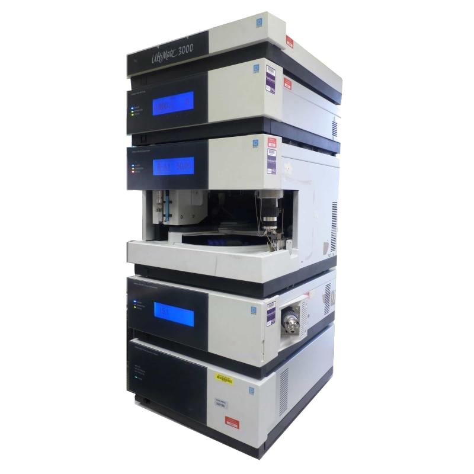

UHPLC Dionex UltiMate™ 3000

| Thermo Fisher Scientific UltiMate™ 3000 | |
|---|---|
| Localização: | Lab. 2.39 Edf. 8 |
| Responsável: | Rodrigo Borges |
| Operador: | Rodrigo Borges |
| Princípio Analítico | Cromatografia |
| Fabricante: | Thermo Fisher Scientific |
| Modelo: | Dionex UltiMate™ 3000 |
| Tipo: | Cromatografia Líquida |
| Detetores: | DAD, FLD, RID, MS/MS |
| Website: | Thermo Fisher Scientific |
Um sistema de cromatografia líquida de ultra-alta performance (UHPLC) destinado à separação, identificação e quantificação de compostos presentes em amostras simples ou complexas. O sistema funciona com base na passagem de uma amostra líquida através de uma coluna cromatográfica, onde os diferentes componentes da amostra interagem com a fase estacionária e são separados com base em suas propriedades químicas. O UHPLC é amplamente utilizado em laboratórios de pesquisa, indústria farmacêutica, química analítica e outras áreas que requerem análises precisas e rápidas de compostos químicos. Permite a utilização de diferentes colunas que se aplicam a diferentes tipos de análises, como separação de proteínas, peptídeos, ácidos nucleicos, metabólitos e outros compostos químicos. O sistema é altamente sensível e capaz de detectar compostos em concentrações muito baixas, tornando-o uma ferramenta valiosa para a análise de amostras complexas.
Detetor de Diodos (DAD)
O detetor de diodos (DAD) permite a detecção e quantificação de compostos através do espectro UV-Vis, fazendo a leitura de todo o espectro de absorção que permite a identificação de compostos que possuam espectros únicos e a quantificação dos mesmos fazendo a leitura da intencidade do sinal com o comprimento de onda onde o composto apresenta o pico de absorção.
Detetor de Fluorescência (FLD)
O detetor de fluorescência (FLD) permite a detecção e quantificação de compostos fluorescentes, ou seja, compostos que emitem luz quando excitados por uma fonte de radiação. O FLD é altamente sensível e específico, permitindo a detecção de compostos em concentrações muito baixas. É amplamente utilizado em análises de biomoléculas, como proteínas, peptídeos e ácidos nucleicos, bem como em análises ambientais e farmacêuticas.
Detetor de Indice de Refração (RID)
O detetor de índice de refração (RID) permite a detecção e quantificação de compostos com base em alterações no índice de refração da fase líquida. É amplamente utilizado em análises de polímeros, açúcares e outros compostos que apresentam variações significativas no índice de refração e por norma que não apresentam características que permitam ser detetadas pelos outros detetores.
Detetor de Massas (MS/MS)
O detetor de massas (MS/MS) triple-quadrupolo equipado com Electron Spray Ionization (ESI) permite a detecção e quantificação de compostos com base na sua massa molecular. O MS/MS é altamente sensível e específico, permitindo a detecção de compostos em concentrações muito baixas. É amplamente utilizado em análises de biomoléculas, como proteínas, peptídeos e ácidos nucleicos, bem como em análises ambientais e farmacêuticas.
Técnicas Implementadas:
| Técnica | Método |
|---|---|
| Pigmentos Fotosintéticos | Rodrigo Borges (Baseado em Sanz et al. (2015) ) |
| Carbamazepina | Rodrigo Borges |
Possíveis Técnicas Futuras:
Amino Ácidos
Açúcares Redutores
Ácidos Orgânicos
Bisfenóis
Compostos Fenólicos
Fármacos
Principais Aplicações:
- Análise qualitativa e quantitativa de compostos orgânicos;
- Metabolómica direcionada e não direcionada;
- Lipidómica;
- Proteómica (quando acoplado a MS/MS);
- Análise de produtos naturais;
- Caracterização de metabolitos secundários;
- Análise de alimentos e bebidas;
- Controlo de qualidade alimentar;
- Análise de contaminantes ambientais;
- Monitorização da qualidade da água;
- Análise de fármacos e produtos farmacêuticos;
- Estudos de estabilidade química;
- Desenvolvimento e validação de métodos analíticos;
- Análise de pigmentos naturais;
- Determinação de vitaminas e antioxidantes;
Tipos de Amostra:
- Águas doces;
- Água do mar;
- Águas residuais;
- Sedimentos;
- Solos;
- Biomassa;
- Microalgas;
- Plantas;
- Alimentos e Bebidas;
- Óleos e lípidos;
- Extratos vegetais;
- Extratos microbianos;
- Culturas celulares;
- Tecidos biológicos;
- Plasma e soro;
- Urina;
- Produtos farmacêuticos;
- Compostos naturais;
- Biomateriais;
- Amostras ambientais;
Principais Vantagens:
- Elevada resolução cromatográfica;
- Excelente sensibilidade e seletividade analítica;
- Separação rápida e eficiente de compostos complexos;
- Compatível com uma vasta gama de detetores (DAD, FLD, RI e MS/MS);
- Elevada precisão e reprodutibilidade dos resultados;
- Consumo reduzido de solventes relativamente ao HPLC convencional;
- Operação totalmente automatizada;
- Flexibilidade na utilização de diferentes métodos cromatográficos;
- Adequado para análises qualitativas e quantitativas;
- Compatível com desenvolvimento e otimização de métodos;
- Elevada capacidade para análises de rotina e investigação;
- Integração com o software Chromeleon™ para aquisição, processamento e gestão de dados;
- Plataforma modular que permite expansão e adaptação a diferentes necessidades analíticas;
- Ideal para investigação multidisciplinar em química, biologia, ambiente, alimentos e biotecnologia;
Específicações Técnicas:
| Específicação | Valor |
|---|---|
| Fabricante | Thermo Fisher Scientific (Dionex) |
| Modelo | UltiMate™ 3000 UHPLC System |
| Software | Chromeleon™ Chromatography Data System |
| Tipo de Bomba | Bomba de gradiente quaternária |
| Pressão de Operação Máxima | 620 bar ou 9000 psi |
| Fluxo Máximo | 10 mL/min |
| Temperatura do Autosampler | 4 a 40 °C |
| Temperatura de Coluna | Ambiente a 80 °C |
| Compatibilidade de Detetores | DAD, FLD, RI, UV/VIS, CAD, ECD, MS/MS |